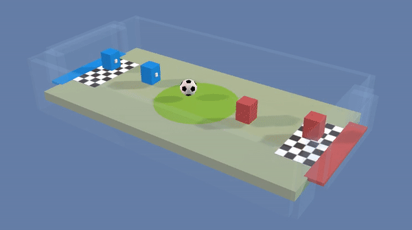
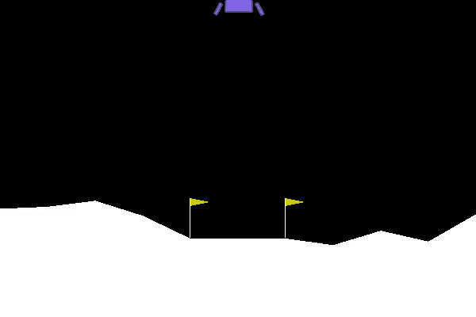
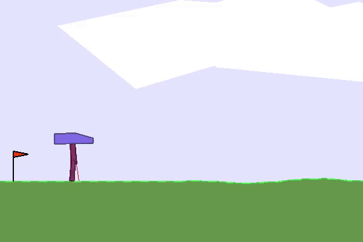
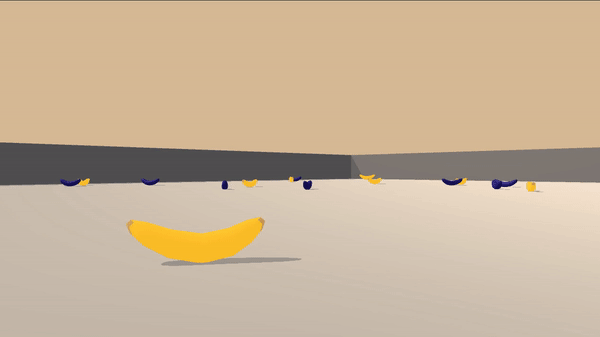
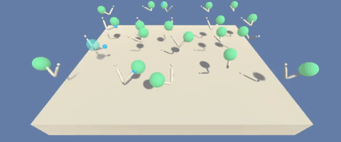
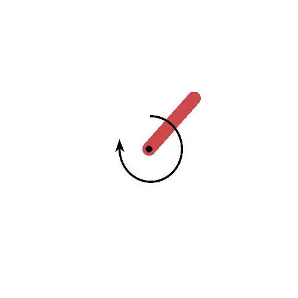

|
Satyadwyoom Kumar I am an Undergraduate student at Netaji Subhas Institute of Technology. My Research Interests include Reinforcement Learning, Adversarial ML, Computer Vision |
PROJECTS |
|  |
Goalies and Strikers were trained from two separate Experience Replays Respectively. |
||||||||||

|
Both the agents uses their combined experience to improve themselves. |
||||||||
|  |
Cross-entropy method was used to make a smart lander which could land on the surface between the two flags. |
||||||
|  |
The Bipedal Walker not only learns to stand but also learns to run. |
||||
|  |
The agent Navigates through a region containing yellow and blue bananas lying in close proximity to each-other and collects only yellow bananas. |
||
|  |
The agent tries to maintain the tip of the arm inside the moving green region. multiple agents with a shared experience replay were trained to achieve fast learning. |
|  |
The agent learns to generate momentum by making the Pendulum move to and fro, so when the required momentum is achieved it is able to cross the midline and balance itself to point upwards. |